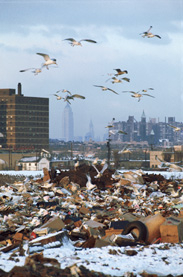

Assured isolation is a concept of waste management which proposes the interim storage of waste at a site which will 300-500 hundred years later either be emptied and decommissioned, or formally converted into a disposal facility. In this manner, the disposition of the waste is postponed, and supposedly, so is the fate of the site to become a declared dump. This fork in the road is a fundamental defining characteristic of assured isolation, and each possibility is supposedly given equal consideration, funding, and planning.
Another fundamental characteristic of an assured isolation facility is that some basic monitoring of the waste is to be mandated, which is not required at a waste dump. It is for this reason that any monitoring put in place is misleadingly called "enhanced monitoring." In fact, there's absolutely nothing enhanced to speak of, and what has been proposed is a simple system of cameras and dosimeters. In addition, external monitoring of the facility is casually dismissed by planners as being unnecessary. This same attitude is reflected when it comes to the site selection criteria- the environmental requirements for a dumpsite are repeatedly declared to be too strict to be applied to an assured isolation facility.
When approached, assured isolation proves to be a big experiment in Texas environmental law. Regulations for assured isolation do not yet exist in either federal or state law, and no federal agency provides a formal definition. Texas would be the testing ground for a type of facility which the NRC and DOE have yet to actually define, and would probably become a national model, inheriting all of the defects of this poor documentation.
The Origins of Assured Isolation: A Public Relations Motive
The assured isolation concept was first presented in the 1995 Radwaste Magazine article "Assured Storage Facilities: A New Perspective on LLW Management," written by William L. Newberry, David H. Leroy, and Thomas Kerr. Refering to the LLRWPA, it says, "states assumed responsibility for disposal of radioactive waste just as public cynicism toward government initiatives and skepticism about the safety of nuclear technologies were both reaching a high plateau. The renewed efforts of states to develop new disposal sites have taken place against the political backdrop of Chernobyl, Three Mile Island, nuclear disarmament, and toxic waste horror stories."
| 
Public perception of a radwaste dump as characterized by AI's developers |
The proposal whines that "regardless of their engineered features, the planned structures for housing
waste are still commonly referred to as dumps. The popular image remains that of sanitary
landfills for radioactive waste, complete with tipping fees, wheeling seagulls and occasional
scavengers."
It also states, "like a child's chinese finger puzzle that tightens its grip as
the victim tries harder to extricate himself, the more vigorously states attempt to site
new disposal facilities, the more strident, vocal, and effective the opposition becomes."
"We suggest replacing the objective of permanent disposal with one that may be realistic and politically palatable." After the article was published, the name 'assured storage' itself was judged to not be sufficiently "politically palatable" (and still implied 'disposal' too much) for planners so it was changed to 'assured isolation'. |
Assured storage was said to be a facility built with a 100-year deferred disposition. Although the facility was not required to be designed to disposal facility specifications or siting regulation, it was proposed to be backfilled with sand when converted into a permanent dump. Active monitoring was to consist of inspection walkways, cameras, and dosimetry in floor drains. The decommissioning option for the hypothetical site is not discussed at any length.

The Problem of Deferred Disposition
One of the most obvious issues when approaching assured isolation is that of the deferred disposition of the waste. (waste always has some disposition such as generation, processing, storage or disposal) The nature of deferred disposition in the case of assured isolation is such that after a 100-500 year storage period, the facility is to either be converted to a disposal facility or decommissioned (with the waste destined to be retrieved to a disposal site). These two options, decommission or dispose (often referred to as retrieve or dispose) are supposedly to be given equal consideration in the implementation process of an assured isolation facility.
This has not been the case with legislation in Texas regarding assured isolation, which has devoted emphasis to the disposal option and done little more than mandate a decommissioning fund without outlining the use of decommissioning funds. [HB1171, 1999 76th Leg.; HB3420, 2001 77th Leg.] This demonstrates the intent of the bill's authors, and that it is not simply cynicism which encourages the view that there really is no serious consideration or intent to decommission an assured isolation facility.
Active Monitoring Used To Justify Weak Regulation
When looking at just about any regulatory aspect of assured isolation, active monitoring (or "enhanced monitoring") is used as a sole justification for dropping standards from the federal disposal and storage requirements [10 CFR 61]. Most literature on assured isolation calls for weak siting criteria and lack of external monitoring. The DOE states "the waste containers themselves would be accessible for ongoing inspection from within the facility, eliminating the possibility of radionuclide release through the groundwater pathway"
An assured isolation facility will have inspection aisles for workers, and cameras placed in these corridors. A common proposal is that a drainage system would be monitored by dosimeters to detect a leak, although leaks outside of the drainage area would be undetectable. This is obviously a very rudamentary system, with nothing enhanced about it.
This simple internal monitoring system is used to dismiss external monitoring, emergency plans and environmental considerations of siting an assured isolation facility. There are some minor variations on this, for example, whereas the TNRCC recommended that the siting criteria be as strong as that for a disposal facility, they had still maintained that external monitoring was inappropriate.
There seems to be a general attitude on this issue which reflected in a statement of a 1999 Waste Management Symposium report by one of the founders of the assured isolation concept:
| "because an assured isolation facility is subject to continuous inspection and preventive maintenance, it would not need to meet the site characterization requirements necessary for a 10 CFR 61 disposal facility. The problem of selecting a natural site and successfully licensing it in spite of the unavoidable geological and hydrological uncertainty of that site then disappears. Siting and licensing an assured isolation facility become much simpler. An assured isolation facility could be built practically anywhere. In Texas, for example, the pragmatic solution to the problem of placement would seem to be locating the facility in the less densely populated regions of either northern or western Texas. An assured isolation facility could be built virtually anywhere in this area." |
Mixed Messages: Accidents More Likely, Yet Emergency Plan "Inappropriate"?
In the TNRCC Legal Considerations, it actually admits that "because AI incorporates active monitoring and maintenance during the service life of the facility (approximately 300 years), there may be greater potential for employee exposure or on-site accidents than at a disposal facility which operates for a few decades before closure and post-closure."
In the DOE literature it says that active monitoring makes an emergency plan to handle such accidents "unnecessary and inappropriate ... regardless of projected accident doses". DOE first states that emergency procedures for disposal facilities are too strict for an Assured Isolation facility, and proposes downgraded procedures outlined for an 11(e)2 dump, but later concludes by saying "a requirement to prepare an Emergency Plan, regardless of projected accident doses from the AIF, appears to be unnecessary and inappropriate". This sort of contradiction which is not unusual for assured isolation literature.
Texas and Federal Law
Texas is what is called an NRC "agreement state" [42 U.S.C. 2021(b), (d)(1), and (o)(2)]. What this means is that the state has chosen to regulate its own radioactive material in an agreement with the NRC, and that the state will enact laws which serve as functional equivalents to NRC regulations. In this relationship, Texas law is supposed to follow the federal lead. In the case of assured isolation, there are no relevant federal laws to adopt from when drafting legislation. Since assured isolation is not federally defined, the process of such drafting legislation makes Texas attempts to outline assured isolation incomplete and inadequate.
Although the NRC has offered to provide their assistance, the NRC does not endorse the concept of deferred disposition. Federal decisionmaking processes including environmental impact statements should be conducted before an agreement state considers assured isolation legislation.
[Newberry, William F., Thomas A. Kerr and David H. Leroy, "Assured Storage Facilities: A New Perspective on LLW Management," Radwaste Magazine, September 1995.]
[Texas Compact Low-Level Radioactive Waste Generation Trends and Management Alternatives Study, RAE-42774-019-5407-2, August 2000, TNRCC, pg 5-7, 6-4]
[DOE/LLW-250a Licensing an Assured Isolation Facility for Low-Level Radioactive Waste Vol 1: Licensing Strategy and Issues. DOE Nat'l LLW Mgmt Program, July 1998, Sect 4.3, Pg. 16, Sect 4.7, Pg. 19, Sect 4.8, Pg. 20]
[DOE/LLW-250b Licensing an Assured Isolation Facility for Low-Level Radioactive Waste Vol 2: Licensing Strategy and Issues. DOE Nat'l LLW Mgmt Program, July 1998, Pg. 143]
[from WM'99 Conference, 1999 - Assured Isolation Facilities: Solving The Problem Of Safely Managing Low-Level Radioactive Waste. LeMone, UT El Paso; Kerr, Nat'l LLW Management Program; Jacobi, Jr., Texas LLRW Disposal Authority. Pg 6]
["Legal Considerations Related To Low-Level Radioactive Waste Management Techniques In Texas," by Patricia A. Hershey and Arnoldo Medina, Staff Attorneys, Environmental Law Division, TNRCC; August 2000, p.49]
Closing: Main Points
Here are ten reasons why assured isolation is a bad idea:
1. There is no guarantee that an Assured Isolation facility would ever be placed into a Case 1 phase of "Retrieve and Dispose." Most, if not all literature written on assured isolation stresses the option to convert the facility to a disposal site, and even sometimes presents this as a goal. It is a reasonable assumption that facility will likely be converted to a disposal site.
2. Planners have presumed there will be no error over centuries in both the internal monitoring system, or the containment of waste, and proclaim this to justify loose environmental regulation and siting criteria.
3. The TNRCC study says reduced external environmental monitoring justified, and that environmental impact projections need not be prepared. Department of Energy downplays need for an environmental report required by NEPA for preparation of Environmental Impact Statement.
4. Regulations for assured isolation do not yet exist in either federal or state law, and no federal agency provides a formal definition.
5. Assured isolation legislation in Texas has repeatedly misdefined assured isolation, and has failed to outline key points of the concept. A primary example is the extensive outline of the use of funds to convert the facility to a disposal site, and no mention whatsoever on how a decommissioning fund is to be implemented. For this reason it must be concluded that what Texas legislation has outlined would not be considered assured isolation if put into practice, and suggests that point one (about no intent to decommission) is reiterated.
6. As an "agreement state," Texas models its radioactive material laws on the federal laws, such as the Atomic Energy Act. This process does not operate in reverse.
7. For reasons stated in numbers 4 and 6, there is a possibility that the DOE may legally have to regulate such a site, which would exclude State oversight at the facility.
8. If an assured isolation facility license is issued to a company such as WCS, there is a high probability that WCS will return to the DOE with a proposal as it had done in 1996 (which began the WCS v.s. DOE lawsuit). Since federal authorities admit some confusion as to whether assured isolation is "disposal" or is "storage," WCS will likely claim that it is admissable as a disposal license required by the DOE to qualify for disposal proposals.
9. Assured isolation does not satisfy the Texas Compact's requirement for waste disposal. This is a matter of State record.
10. Assured isolation was openly designed to evade public and stakeholder perceptions by claiming to not be a disposal site. The planners said in the original proposal that it was a plan that was primarily designed to mislead the public- they spent the entire introduction discussing how it would deal with the public perception problem faced with siting waste dumps. Any pursuit of this option must be interpreted as an extension of this intent. Monitored aboveground retrievable storage may be the solution for Texas waste, but assured isolation is far from filling the prescription.
Reflections on the 78th Legislative Session: Misinterpretations of Assured Isolation Abound
During the 78th Session of the Texas State Legislature, it became apparent that assured isolation was becoming a name even more removed from the concept itself. Democrats and republicans all around began to use the term as a synonym, to merely be the idea of a facility utilizing aboveground monitored retrievable storage. Differed disposition was never mentioned once this session. Amendments calling for monitored aboveground retrievable storage of waste were also called "assured isolation amendments." Representative Chisum, who previously proposed his own version of assured isolation for State waste as an alternative to importing DOE waste, performed an about face, a full promoter of DOE waste importation. The only bill which directly defined the concept (using the term "assured isolation") was presented by a democrat who ignored differed disposition entirely. Assured isolation was entirely misrepresented in an unprecedented manner this session, not just selectively utilizing the concept, as Chisum had done before with his preference for disposal option, but completely ignoring any of the concept's basic historical development. Some responded to this by saying that one of the authors of the concept (one of three) publically implied that assured isolation can be whatever it is ultimately defined as (the main excuse for ignoring the concept's key points). In short, assured isolation was taken as a phrase literally meaning "assuring the isolation of the waste," and nothing more. As said earlier in this article, assured isolation is not a synonym for aboveground monitored retrievable storage, but an implementation of such storage with many strings attached in a larger plan- mainly to mislead the public that it is not a dump.